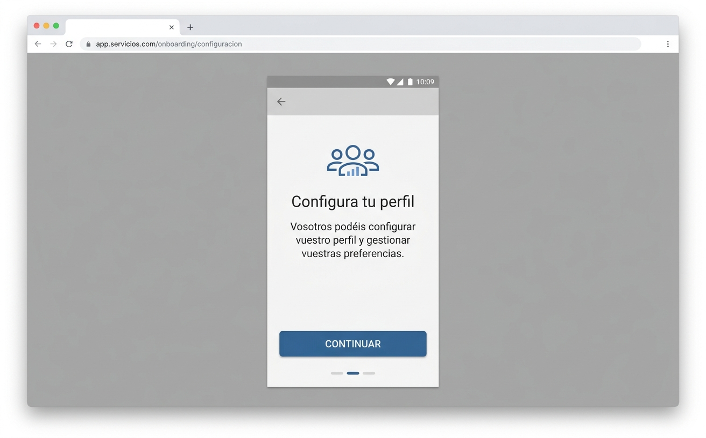

Localización con empatía
Adaptación de textos del español de España al español latinoamericano
El problema era
Los textos del producto estaban escritos en español de España y sonaban ajenos para el público latinoamericano. Frases como "Vosotros podéis configurar vuestro perfil" generaban distancia, no cercanía. El usuario sentía que el producto no era para él.
El objetivo era
Adaptar los textos al español latinoamericano sin perder el tono de marca, y que las personas se sintieran interpeladas, no ajenas. No se trataba solo de cambiar palabras: se trataba de cambiar la sensación.
Los datos mostraron que
- La tasa de finalización de onboarding era un 15% más baja en Latinoamérica que en España.
- Los comentarios de usuarios decían: "parece que esto no es para mí", "el lenguaje es muy raro".
- El NPS en Latinoamérica era 12 puntos inferior al de España.
La solución

Antes: textos correctos pero ajenos.
Negociación con diseño y desarrollo
El equipo de marketing quería mantener una voz de marca única para todos los mercados. Desarrollo no quería duplicar textos. Negociamos:
- Con marketing: mantener la voz, pero adaptar el tono y las expresiones locales.
- Con desarrollo: usar un sistema de textos con variantes por región, sin duplicar código.
Se validó porque
La tasa de finalización de onboarding en Latinoamérica subió un 18%.
El NPS en Latinoamérica subió 9 puntos.
Los comentarios negativos sobre el lenguaje desaparecieron de las encuestas.
Mi aporte fue
- Revisé y adapté más de 200 textos del producto.
- Creé un glosario de términos con equivalencias España / Latinoamérica.
- Validé las adaptaciones con 6 usuarios latinoamericanos.
Habilidades blandas
Tuve que negociar con marketing para que entendieran que adaptar el lenguaje no era "traicionar la marca", sino acercarla a más personas. También coordiné con desarrollo para que la implementación técnica fuera sostenible.
Me sorprendió que
No se trataba solo de cambiar "vosotros" por "ustedes". Había referencias culturales, ejemplos y metáforas que no funcionaban igual. La localización real es mucho más profunda que un diccionario.
Me adapté a
A trabajar con un equipo distribuido en varios países, con husos horarios distintos y prioridades distintas. Aprendí a documentar todo para que las decisiones no se perdieran.
Hoy (2026) lo haría distinto porque
Ahora existen sistemas de gestión de traducciones con IA que permiten adaptar tono y contexto automáticamente, no solo palabras. Podría dedicar menos tiempo a la parte mecánica y más a la validación con usuarios.

Después: textos que se sienten propios.